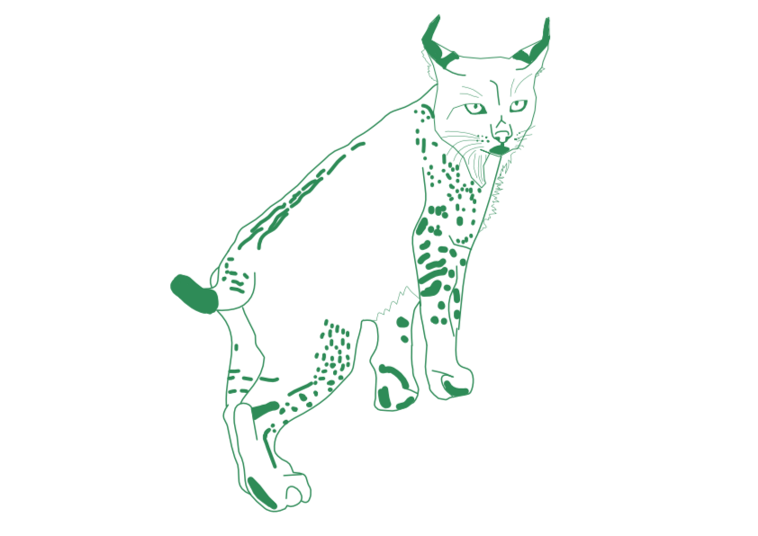

Paso 1: Al Borde del Abismo
En 2002, solo quedaban 94 linces ibéricos en el mundo, confinados en dos pequeñas poblaciones en Andalucía. Su extinción parecía cada vez más evidente.
Paso 2: La Apuesta por la Vida
Arrancó un esfuerzo de conservación sin precedentes. Gracias a los programas de cría en cautividad y a la protección del hábitat, la población inició una lenta pero constante recuperación, superando los 400 ejemplares en 2015.
Paso 3: La Repoblación
Con las reintroducciones en nuevos territorios como Extremadura y Castilla-La Mancha, la especie cruzó una barrera clave. En 2020, la población superó por primera vez los 1.000 ejemplares, expandiendo su reino.
Paso 4: España, el Gran Refugio
España concentra la mayor parte de la población ibérica, distribuida principalmente por Castilla-La Mancha, Andalucía, Extremadura y nuevas zonas de reintroducción como Murcia, Castilla y León y Madrid. En 2024, la población española alcanzó los 2.047 ejemplares.
Paso 5: Un Éxito Ibérico Compartido
Al otro lado de la frontera, la población lusa se concentra en el Valle del Guadiana y ya suma 394 linces en 2025. Sumando ambos países, la población total del lince ibérico alcanzó en 2025 un récord histórico de 2.663 ejemplares, con 542 hembras reproductoras y 952 cachorros nacidos ese año. El lince ibérico ha dejado de estar al borde de la extinción para convertirse en un símbolo de esperanza transfronteriza.
